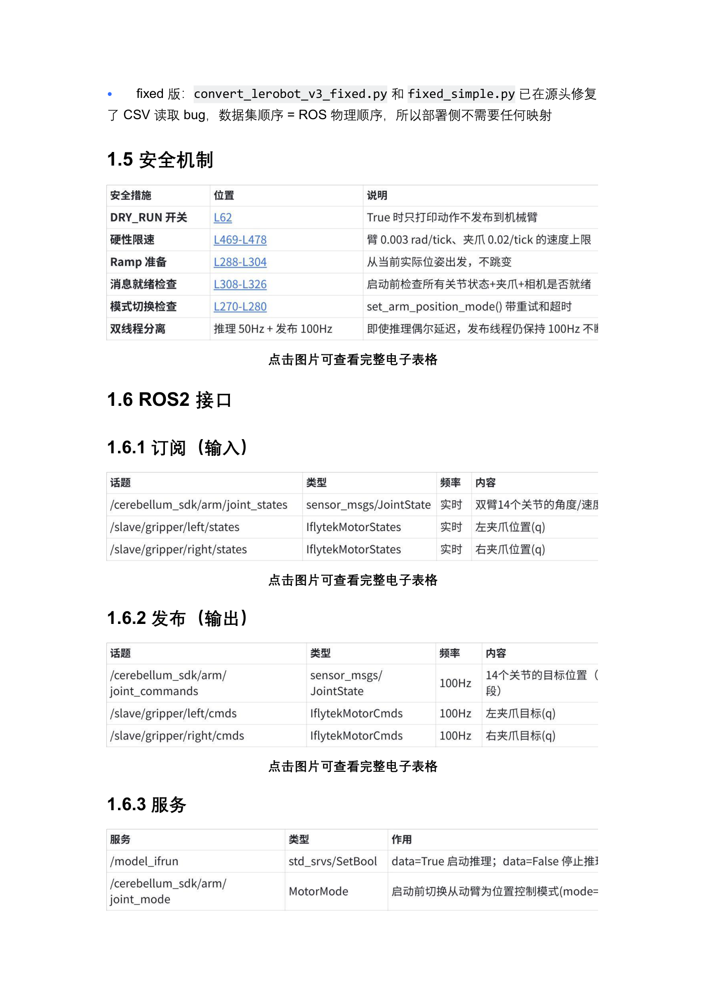
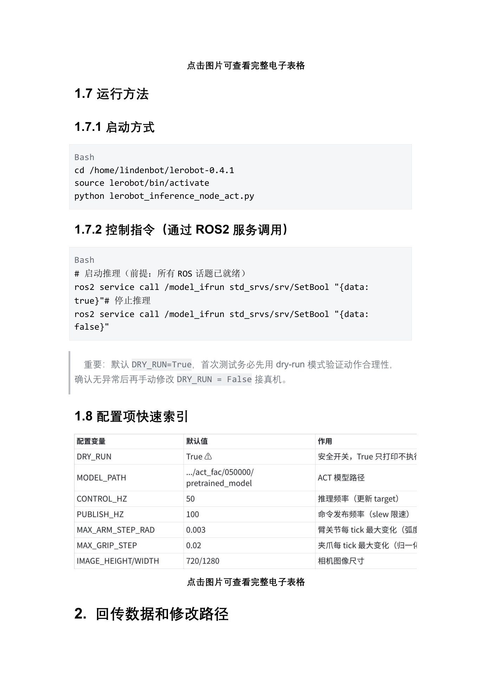
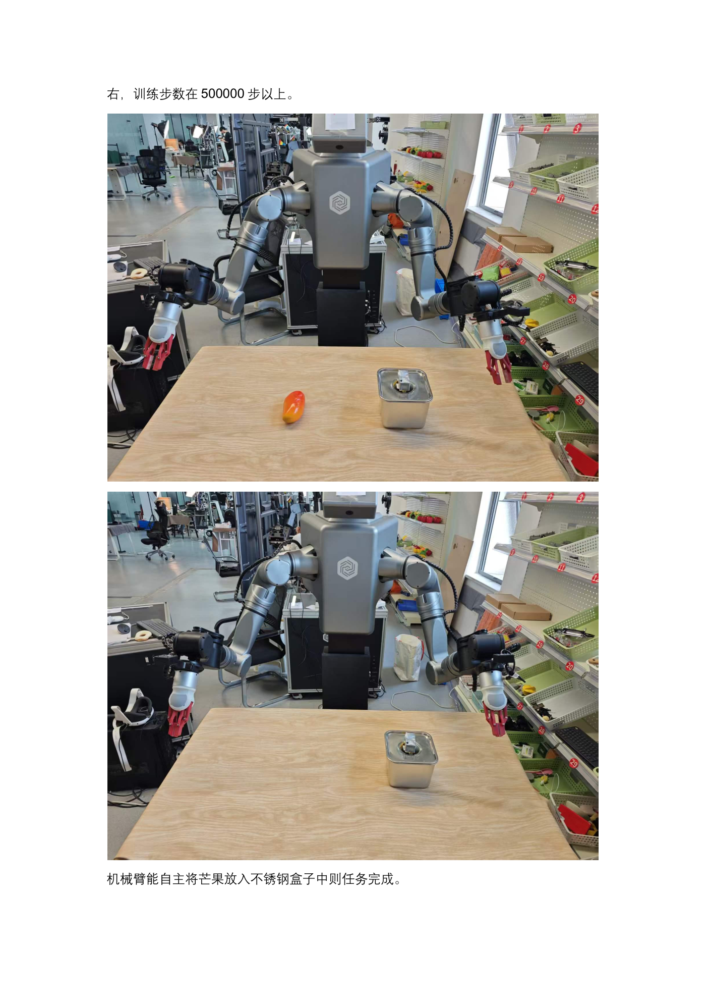

EXP-04 · 8 学时
真机推理与鲁棒性评估
把训练好的 ACT checkpoint 部署回真机：三终端跑通「硬件层 → 推理节点 → 服务开关」，先 DRY_RUN 干跑再接真机复现开盖-取物-入罐-盖盖闭环，最后用摆放偏移检验策略的鲁棒性。
01学习目标
- 读懂推理节点的双线程结构：50Hz 推理线程出目标、100Hz 发布线程经限速平滑后发指令。
- 掌握三终端启动法与 /model_ifrun 服务开关，理解 DRY_RUN 安全开关的干跑验证流程。
- 能按案例步骤完成家庭收纳闭环真机复现，并记录成功/失败现象。
- 理解「摆放偏移鲁棒性」评估的意义：数据覆盖范围决定策略能容忍多大的场景变化。
安全第一（案例原文）：确保推理开始之前，机械臂附近没有人活动；抓取范围内不能站人，桌面做适当保护。
02原理：双线程推理与三层平滑
推理节点像一位「边看边喊话的指挥」：推理线程每 20ms（50Hz）看一眼三路相机 + 16 维关节状态，让 ACT 算出「接下来该怎么动」；但机器人不能听完就猛动——发布线程每 10ms（100Hz）把目标动作先「磨平」再发出去。为什么要磨平？网络输出偶尔会抖，直接执行等于手臂突然哆嗦。平滑分三层：① 滑动窗口平均（取最近 5 个目标求均值，抹平单点毛刺）、② EMA 平滑（α=0.15，每次只朝目标挪一小步，像轻推弹簧）、③ 硬性限速（臂关节每拍最多变 0.003 rad、夹爪 0.02，物理上封顶）。三层过滤后，动作既跟得上策略又稳如人手。
动作块 chunk
ACT 一次预测未来 100 步动作，存进 FIFO 队列逐步弹出，队列空了再重新推理——动作天然连贯不碎蹦。
恒等映射
fixed 版转换脚本已修复列偏移 bug，数据集 16 维顺序 = ROS 物理顺序，部署侧不做任何循环移位。
Ramp 起步
首次推理从「当前实测关节角」出发逼近目标，避免从零位突然跳变——上电不甩臂。
鲁棒性
行为克隆只认「画面→动作」映射；摆放超出采集覆盖范围，画面陌生化，策略就会露怯。
一句话原理：推理管「想什么」，发布管「怎么动」——想得快（50Hz）、动得稳（100Hz + 限速），真机才既灵敏又安全。
03硬件与环境：ROS2 接口与安全机制
三路相机
/dev/cam_head、/dev/cam_left、/dev/cam_right，720×1280 输入策略。
订阅（输入）
/cerebellum_sdk/arm/joint_states（双臂 14 关节实时）+ /slave/gripper/{left,right}/states（夹爪位置 q）。
发布（输出）
joint_commands 与左右夹爪 cmds 均 100Hz：14 关节目标位置段 + 左右夹爪目标 q。
服务（开关）
/model_ifrun（SetBool：true 启动 / false 停止推理）、joint_mode（MotorMode：切从动臂位置控制模式）。
| 安全措施（04 文档 1.5） | 机制 |
|---|---|
| DRY_RUN 开关 | True 时只打印动作不发布到机械臂——首测新模型必开 |
| 硬性限速 | 臂 0.003 rad/tick、夹爪 0.02/tick 的速度上限 |
| Ramp 准备 | 从当前实际位置出发，不跳变 |
| 消息就绪检查 | 启动前检查所有关节状态 / 夹爪 / 相机是否就绪 |
| 模式切换检查 | set_arm_position_mode() 带重试和超时 |
| 双线程分离 | 推理 50Hz + 发布 100Hz，推理偶尔延迟时发布线程仍保持 100Hz |

04操作步骤：从干跑到真机复现
S1部署模型
回传 checkpoint，改 MODEL_PATH 指向 pretrained_model
回传 checkpoint，改 MODEL_PATH 指向 pretrained_model
→
S2DRY_RUN=True 干跑
三终端启动，只打印动作验证合理性
三终端启动，只打印动作验证合理性
→
S3DRY_RUN=False 真机
确认无异常后改 False，服务开关启动执行
确认无异常后改 False，服务开关启动执行
→
S4复现与鲁棒性评估
恢复采集场景跑闭环，再平移摆放测偏移
恢复采集场景跑闭环，再平移摆放测偏移
- 环境准备：把 lerobot_inference_node_act.py 放入 /home/lindenbot/lerobot-0.4.1/，修改 MODEL_PATH 指向本任务 checkpoint。
- 终端 1 硬件层：运行 01start_robot_act.sh（臂 SDK + 夹爪 + 碰撞检测）。
- 终端 2 推理节点：运行 run_act_node.sh，看到「节点初始化完成，等待 /model_ifrun 启动指令」。
- 终端 3 干跑：先保持 DRY_RUN=True，SetBool true 启动，查看打印的 L_arm/R_arm 动作序列是否合理。
- 切真机：改 DRY_RUN=False 重启节点，SetBool true，机械臂自主完成开盖-取物-入罐-盖盖；SetBool false 停止。
- 鲁棒性评估：环境恢复至采集阶段先跑通闭环；随后将罐子/芒果平移少量位置重复测试，记录成功与失败边界。


排查顺序（案例原文）：如果机械臂不能完成任务，首先检查桌面环境参数与预设是否一致，其次检查采集和训练次数是否足够——简单任务一般建议采集数据 200 次左右、训练步数 500000 步以上。
05关键命令（三终端）
# ──终端1：机器人硬件层（臂 SDK + 夹爪 + 碰撞检测）── bash /home/lindenbot/iflytek_armtele_project/start_bash/04model_run_demo/01start_robot_act.sh # ──终端2：ACT 推理节点（首次测新模型务必先 DRY_RUN=True）── bash /home/lindenbot/lerobot-0.4.1/run_act_node.sh # ──终端3：启动 / 停止推理── source /home/lindenbot/iflytek_armtele_project/install/setup.bash ros2 service call /model_ifrun std_srvs/srv/SetBool "{data: true}" # 启动 ros2 service call /model_ifrun std_srvs/srv/SetBool "{data: false}" # 停止
干跑判读：终端 2 打印
DRY_RUN=True：只打印动作，不发布到机械臂，step=0/10/20… 的 L_arm/R_arm 数列应连续缓变；若出现跳变或方向明显反常，先回 EXP-03 查数据与训练，不要急着接真机。MODEL_PATH 指哪
家庭任务指向 …/output/put_fruit_in_box/last/pretrained_model（文档默认示例为 …/act_fac/050000/pretrained_model）。
怎么确认就绪
相机三路 ✓、模型 chunk_size=100 ✓、订阅/发布者 ✓、等待 /model_ifrun 指令——四连 ✓ 才可继续。
切换真机后
启动会打印「已切换臂控制模式 mode=1」与 ramp 起点→目标，再进入 50Hz 推理循环。
怎么收工
SetBool false 打印「推理循环结束 / 发布线程结束」，硬件层终端随后关闭。
06动画：摆放偏移容忍带与双线程节拍
动画：上半部分罐子在采集形成的容忍带内往复平移表示「小范围摆放变动仍可复现」，越过红线区域画面变陌生则易失败；下半部分 50Hz 推理黄点较慢、100Hz 发布蓝点更密，绿点表示磨平后的指令持续送往双臂。
观察推理点稀、发布点密——即使某一帧推理稍慢，发布线程仍按 100Hz 把现有目标限速平滑地送出去，手臂不会「卡一下抖一下」。鲁棒性的本质：容忍带不是画出来的，是采集时用足够多、覆盖足够宽的示范「铺」出来的。
07互动：摆放偏移鲁棒性评估台
调节场景变化，预判复现表现（滑杆分档为教学示意，文档未给出具体厘米阈值）
等待评估……
判读依据均来自案例原文：桌面到机械臂的距离要尽可能保持一致，否则复现效果较差；方位粗略测量、采集数量足够大时场景小范围变动也可以复现；简单任务建议采集 200 次左右、训练步数 500000 步以上。
08常见问题
Q 节点起不来 / 报相机找不到？
先确认硬件层终端已启动、三路 /dev/cam_* 在线；日志出现「✓相机设备」三连才继续。
Q 调用 /model_ifrun 无响应？
前提「所有 ROS 话题已就绪」：joint_states、夹爪 states 有数据、MODEL_PATH 有效、终端3 记得 source install/setup.bash。
Q 动作幅度小、像慢动作？
正常现象：三层平滑硬限速封顶（臂 0.003 rad/tick、夹爪 0.02/tick），这是安全设计不是故障。
Q 闭环总在某步失败？
按案例排查顺序：先恢复桌面环境参数与预设一致，再核对采集是否 200 次左右、训练是否 500000 步以上。
Q 忘了 DRY_RUN 就启动？
默认 DRY_RUN=True 只打印；改 False 后切换真机会打印「已切换臂控制模式 mode=1」——手放在急停旁再启动。
Q 换了 checkpoint 要改什么？
只改 MODEL_PATH 指向新的 pretrained_model；DRY_RUN 先改回 True 走一遍干跑再接真机。
09拓展阅读
- 《04-聆动机器人推理》：推理源码逐层解析（1.1–1.4）、恒等映射与 cyclic-shift 历史溯源。
- 《聆动机器人案例-家庭场景》第 5 章「复现效果评估」：排查顺序与成功判据原文。
- LeRobot 官方文档：ACTPolicy.select_action 的 FIFO 动作块机制与推理示例。
- 数据增广思路：若希望容忍更大的摆放偏移，可从采集端扩大示范位置覆盖面（回 EXP-02 规划采集）。
- 对照 IND-03 分拣案例：同一套三终端启动与 /model_ifrun 开关，仅换 checkpoint 与场景布设。
10思考题 · 自测
✅ 完成成果
干跑日志 + 真机闭环成功记录 + 一张摆放偏移评估表（至少 3 个偏移档位）。
🧠 原理收获
讲清 50Hz/100Hz 双线程分工，以及三层平滑各自防的是什么问题。
🛠 技能收获
独立完成三终端启动、DRY_RUN 切换、SetBool 启停与 MODEL_PATH 配置。
📐 评分速览
真机复现 40% + 鲁棒性评估表 30% + 原理与排查论述 30%。
思考 1摆放偏移加大后失败率上升，为什么「加训步数」往往不如「补采不同位置的示范」有效？（提示：模型缺的是经验覆盖，不是参数量。）
思考 2如果允许罐子任意摆放，采集时应该怎样设计示范（位置分层？随机撒点？）才能铺出足够宽的「容忍带」？